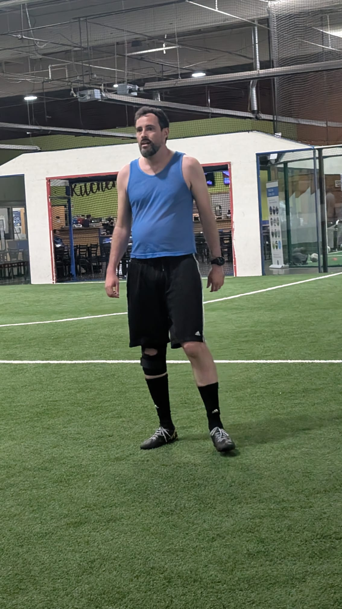
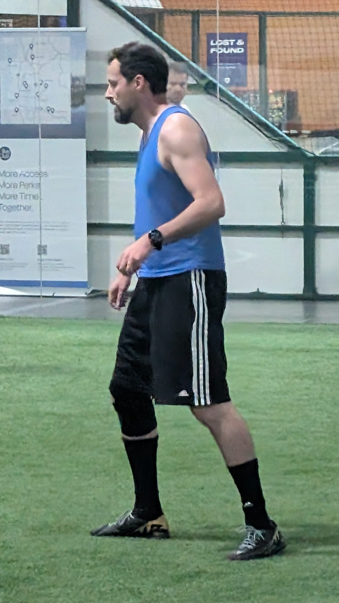
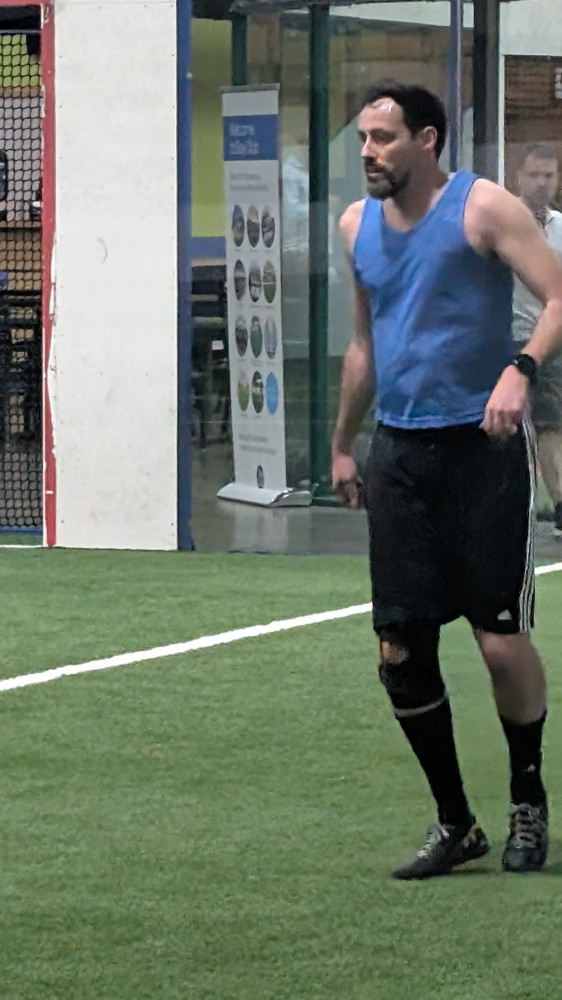

| J | V | E | D | GP | GC | Pts | |
|---|---|---|---|---|---|---|---|
| 🔴 Portugal | 8 | 4 | 2 | 2 | 9 | 7 | 14 |
| 🟡 Brasil | 8 | 4 | 1 | 3 | 5 | 4 | 13 |
| 🔵 Italia | 8 | 2 | 1 | 5 | 6 | 9 | 7 |
A Pelada 10 começou bem antes da pelada. Começou na quinta-feira. O Mano Marcha Lenta nos contactou animado: "Arrumei um boleiro de primeira pra fazer tryout com a gente. Falei pra ele da pelada e o cara empolgou bastante."
Mas aí, Mano, conta mais. Quem é esse cara? Como você conheceu? Os olheiros do Woodenlegs gostariam de saber pelo menos um pouco. Depois de várias mensagens, o Mano se abriu.
Putz, Mano. Você pelo menos sabe o nome do cara? "Ish... Ahh. Sim sim. Paulo Fitipaldi."
Sexta-feira chega e a pelada desmorona. O Marcone Hemorroida foi desistido de última hora pela esposa. O Vovô Doni não conseguiu bater a meta de estimativas da semana e cancelou em cima da hora. O único jeito era chamar o tal Paulo Fitipaldi. Mano, pergunta pro cara se ele corre muito, a idade dele, que posição joga. "Eu não, meu. Nem conheço o cara. Ele nem comprou os 3 pacotinhos porque já tinha completado o álbum. Mas se quiser, aqui vai o contato."
Ao ler o contato, em letras claras sobre fundo escuro, estava o nome do caboclo. Pedro Ferrari. Não Paulo Fitipaldi. Pedro Ferrari. E com o histórico perfeito do Mano em trazer jogadores para tryout, a animação tomou conta. Pô, o cara estava nas notícias em todos os jornais da semana. A Ferrari acabou de lançar o Nissan mais lindo do mundo.
Ligamos pro Ferrari, que foi muito legal. O cara era gente boa de verdade. Falou de como tem tentado achar um lugar pra jogar bola, que tinha um brother chamado Mad Max que também procurava uma oportunidade. Ficou grato, feliz. Disse que tinha algo com a filha mas que não queria perder essa chance de conhecer uma galera legal. Jogador frequente de peladas, apaixonado por futebol.
Ferrari impressionou na entrevista por telefone. Ganhou uma nota similar à do Fabricio no WR. Os times foram divididos e o Ferrari caiu no time do MonoOvo.
Arthur, como um menino cheio de energia, rápido e habilidoso, ficou completamente transtornado ao ver o novato aquecendo.
Calma, MonoOvo. Nem começou o jogo e você já tá chorando. Vamos nos divertir. Estamos aqui pra isso. Fica na paz que tudo vai dar certo.
E isso tudo — por uma razão meio inexplicável — na frente do próprio Ferrari, que começou a ficar tímido e receoso.
Resultado: o Brasil do Arthur ganhou o primeiro jogo 1 a 0. Arthur fez o gol. Mas perdeu o respeito de uma pessoa legal que tinha ido ali pra tentar arrumar amigos, pertencer, se divertir. Perdeu um possível amigo.
Arthur abriu o placar no Jogo 1 aos 19:06. Brasil 1 x 0 Itália. O MonoOvo queria provar que poderia carregar o time mesmo com o Ferrari ao lado. E carregou. Três gols na noite. Artilheiro dividido com Guilherme e Mac — os três com 3 gols cada.
Portugal de Guilherme, Mac e Eduardo respondeu rápido. Jogo 2, Roger soltou o canhão — pela primeira vez na vida não foi um peido de velha, foi um peido de verdade, de macho — e no rebote, Mac marcou de cabeça. Após o jogo ele confessou que o gol tinha sido de nariz. Roger 1, Eduardo 1, Portugal 2 x 0 Brasil. O time vermelho começava a mostrar a cara.
Mas o grande show da primeira metade foi o Jogo 6. Portugal x Itália. Cinco gols em três minutos. 19:44 — Facci abre pra Itália. 19:45 — Mac empata. 19:45 — Guilherme vira. 19:46 — Paulinho empata de novo. 19:47 — Mac fecha. 3 x 2 Portugal. Uma loucura que ninguém conseguiu processar. A bola entrava e saía do gol como se estivesse num flipperama.
Luigi deu um voleio lindo. Perfeito na intenção. Majestoso na execução. Não acertou a bola.
E no meio disso tudo, o Mano deu uma arrancada saindo da própria área. Em câmera lenta. E de alguma maneira inexplicável, todo mundo em campo ficou em câmera lenta também. Levou cinco minutos pra chegar ao outro lado — marcha lenta e câmera lenta ao mesmo tempo, com freio de mão puxado, correndo na subida. O mais impressionante é que ele teve vários tempos durante essa corrida eterna pra olhar a torcida, que ia à loucura batendo nas paredes — em velocidade normal. Não foi gol, mas o fato dele conseguir controlar a velocidade de todos em campo para que o tempo quase parasse, mereceu o gol.
A Itália ganhou o Jogo 7 com Bruno — e aí veio o intervalo. E o intervalo veio com show.



Jogo 8 terminou 0 x 0. Brasil x Portugal numa batalha de nervos onde ninguém acertou nada.
No Jogo 9, a Itália acordou. Bruno e Paulinho marcaram no mesmo minuto — 20:10. 2 x 0 contra Portugal. A torcida gritou: "Itália! O Brasil está com você!" Porque a Itália é o famoso melhor time no papel. Mas não saiu do papel.
E aí veio a jogada ensaiada. Paulinho recebe no meio, sozinho. Só tinha o solitário Aiziro pra passar. Pensou alto: "Agora eu si consagro!!" Mas do nada foi calçado por trás pelo homem invisível. Paulinho caiu sozinho com o homem invisível. Um caiu em cima do outro. Foi uma bagunça, porque ninguém via o homem invisível, mas todo mundo sabia que estavam lá, embaraçados.
Quatro coisas que param no ar: helicóptero, beija-flor, Dadá Maravilha e Aiziro. No lançamento lindo do Fate em direção perfeita à cabeça do Paulinho, Aiziro salta mais alto e para no ar para cortar a bola do Cabelo ao Vento. E ficou lá parado. Tivemos que pedir pra ele descer.
O Fabricio começou a se preparar para levar cabeçada no céu da boca, porque levou uma bolada do Joel bem no queixo. Depois do jogo ele confessou que na semana anterior tinha ido num show do Headtrax no Tacoma Dome e também levou bolada no queixo lá. O homem tem um ímã no maxilar.
E numa das jogadas mais cinematográficas da noite, Guilherme pisou no pé do Wesley, que soltou um gritinho. Os dois caíram no chão juntos, olhos firmes um no outro. Foi lindo. A torcida aplaudiu de pé. Ninguém sabe se foi falta ou pedido de casamento.
Joel jogando com um joelho só foi o grande goleiro da partida. Se tivesse dois joelhos, ficaria de pé e tomaria mais gols.
E Freddie Mercury marcou o gol mais estranho da noite. Chutou com a perna direita, mas a bola bateu na perna esquerda, ficou tonta, e saiu devagarzinho passando debaixo das pernas do Joel, entrando no gol. A torcida pediu bis.
Jogos 10, 11 e 12. Brasil e Portugal dominaram. Minga fez o gol do Jogo 10. Arthur e Eric fecharam o 11. E Portugal encerrou com classe: Guilherme e Mac no Jogo 12, 2 x 0 contra Itália. Portugal campeão com 14 pontos.
No final, Fabricio resumiu a noite com a filosofia do veterano: "O importante é competir."